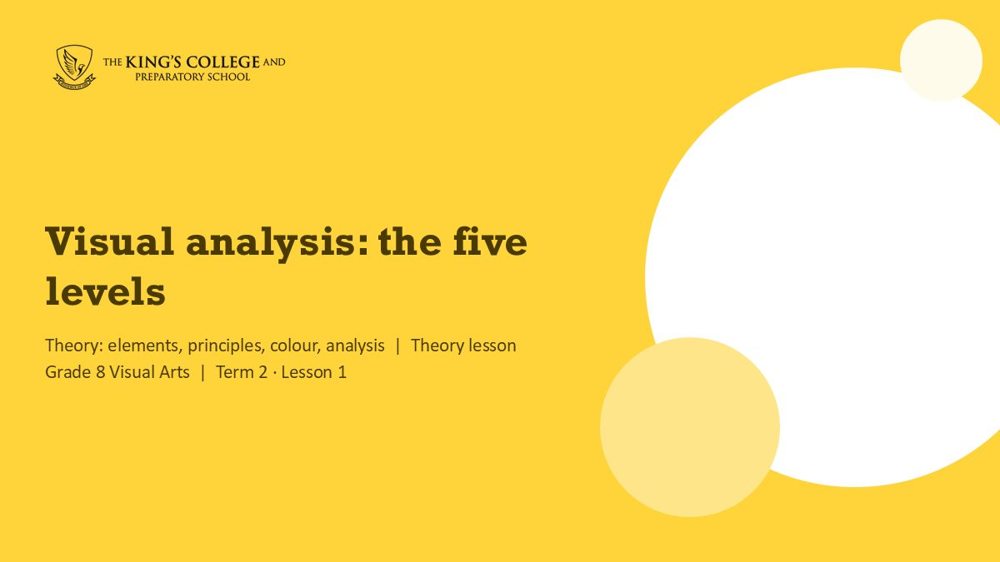

Term 2 · Lesson 1 · Practical lesson
Proportion and measuring
Start here
Today I will
- Today I will measure with my pencil
- Today I will plan with light construction lines
- Today I will draw two objects in the right proportion
Think first
Is the bottle twice as tall as the mug, or three times? Guess first, then let's measure.
Words to know
- Sighting
- Holding up your pencil at arm's length to measure and compare sizes and angles.
- Measuring
- Using one part (a unit) to check how big the other parts are compared to it.
- Proportion
- How the sizes of parts compare to each other and to the whole.
- Construction line
- A light guideline used to plan a drawing, erased or covered later.
Slides

Notes
Sighting and measuring with a pencil; light construction lines; comparing sizes and angles.
How to sight and measure
- Straight arm: Hold the pencil upright at arm's length; lock your elbow.
- Close one eye: Keep the same eye closed every time you measure.
- Choose a unit: Line the pencil tip with the top of the mug and slide your thumb to the bottom: that is one unit.
- Compare: How many mug-heights tall is the bottle? How wide is it in mug-heights?
- Check angles: Hold the pencil along a slanted edge to see the angle, then copy it on paper.
Light lines first
- 2H for planning: Light lines that are easy to erase or shade over.
- Centre line: A light vertical line keeps symmetrical objects straight.
- Mark the top and bottom: Small dashes for each object's height and width before you draw the shape.
- Fix early: Correct proportions before you shade, not after.
Remember
Measure twice, draw once: proportion comes before shading.
Practical
You need: Pencils (2H for guidelines, HB to 6B), eraser, objects, journal
Measured drawing of two objects
- Sit where you can see both objects; do not move your chair during the drawing.
- Measure the smaller object with your pencil: this is your unit.
- Measure the bigger object in units (height and width).
- Mark the heights and widths on your page with light 2H dashes.
- Draw both shapes lightly inside those marks and check the angles.
- When the proportions are right, darken the outlines and add some shading.
Test yourself
- Why must your arm be straight when you sight?
- What is a construction line?
- Why do we use a 2H pencil for planning?
Show answers
1. If your arm bends, the distance changes and the measurements are wrong. 2. A light guideline used to plan the drawing. 3. It makes light lines that are easy to erase or cover.
Finished early?
Measure the room
Practise sighting on something new.
- Choose a window, a door or a cupboard you can see from your seat.
- Hold your pencil at arm's length and measure its width as one unit.
- Count how many units tall it is and write the answer down.
- Draw a light box in your journal with those proportions.